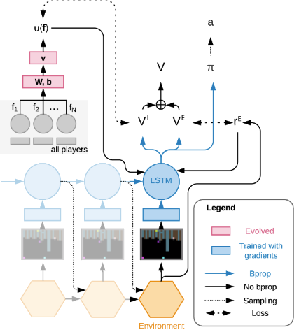
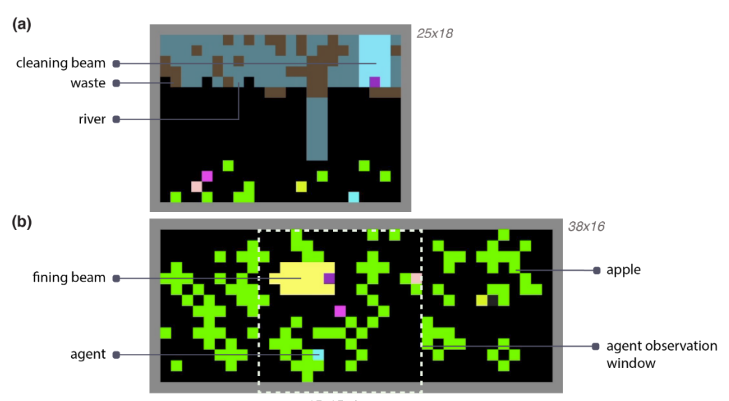
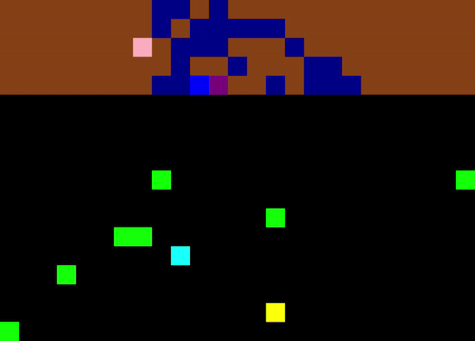

EVOLVING INTRINSIC MOTIVATIONS FOR ALTRUISTIC BEHAVIOR
Final Implementation and Experiment Results
Self-Organising Agent Systems - Master in Artificial
Intelligence - Mario R. O.
In a nutshell
- Main Concept. using multi-agent reinforcement
learning (MARL) combined with evolutionary strategies to promote cooperative behavior among
self-interested agents in intertemporal social dilemmas (ISDs)
- \(TotRwd = ExtRwd + IntRwd\). Reward computed
by considering Environment Feedback \(+\) Collective Welfare Features.

In a nutshell
- Training process.: a system composed of a
MARL, Evolutionary Strategies and solve Intertemporal Social Dilemmas by using Intrinsic Motivations.
- Environments.: Cleanup and Harvest games.
- Experiments.: Random vs Assortative Matching
Restrospective vs Prospective Reward Calculation, Shared vs Individual Reward Network.

System Design
- Agent Design Policy (actions) and Reward
(rewards) Networks connected either to individual or collective outcomes.
- Reward Function.Intrinsinc Reward Function
(FCN) and Extrinsic Reward Function (environment feedback)
- Environement. Clean Up Game (If time:
Harvest Game)
- Evolutionary Dinamics. Experiment mainly
with the shared retrospective network reward, either with random or assortative matching.
Experiments
Objective: Validate that the system can evolve cooperation among agents and evaluate metrics sustainability.
- Experimental Setup
- Initialization of policy and reward network parameters and evolutionary.
- Learning parameters (mutation rates, selection process, learning rates,
etc.)
- Experimental conditions
- Shared Retrospective Reward Network + Random Matchmaking
- Shared Retrospective Reward Network + Assortative Matchmaking
Implemenation Results
- Python based implementation.
- Sequential Social Dilemma Game. Custom environment implementation for the Cleanup scenario using OpenAI gymnasium rendered using PyGame.
- Agents Architecture. Pytorch based Neural Network architecture which encapsulates action decision making processes for the agents.
- Training process. Pytorch based training pipeline that combines the optimization steps (backpropagation + evolutionary strategies) in the learning process.

Experiments Results
Without Intrinsic Motivations
With Intrinsic Motivations
Conclusions
- The use of intrinsic motivations encoded as information of the performance of the other agents in the system used a general knowlede among the agents is useful contribute in the resolution of Intertemporal Social Dilemmas
- The use of Reinforcement Learning processes combined with evolutionary strategies is a suitable method to automate social norms generation.
EVOLVING INTRINSIC MOTIVATIONS FOR ALTRUISTIC BEHAVIOR
Final Implementation and Experiment Results
Self-Organising Agent Systems - Master in Artificial
Intelligence - Mario R. O.